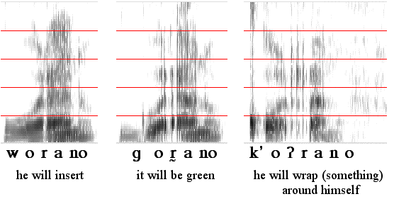
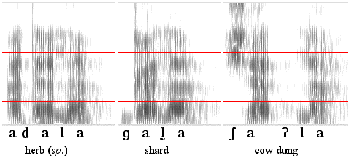

Kambaata


Kambaata is a Cushitic language spoken in Ethiopia. It has laryngealized (glottalized) /'l/ and /'r/ that contrast with sequences of glottal stop followed by /l/ and /r/, as well as /l/ and /r/.
Thanks to the speakers, Degginnet Wotango (ex. 1, 2) and Tesemma Handiso (ex. 2), and Yvonne Treis for these recordings and the analysis.